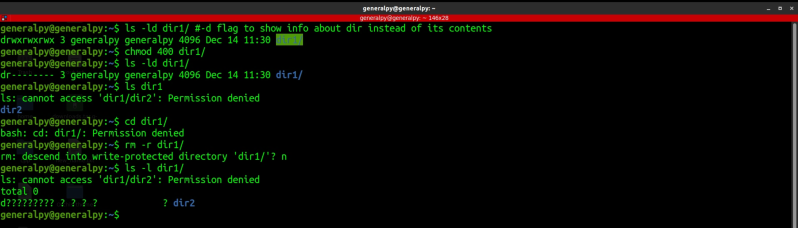
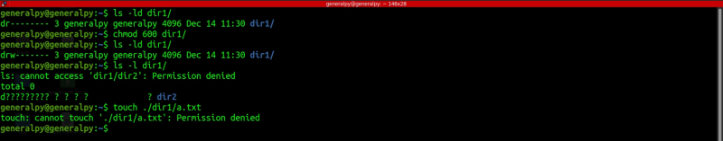
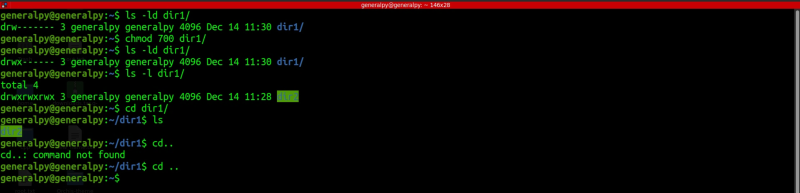
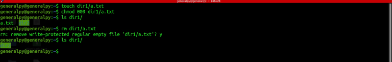

Permissions work differently on directories than files.
Directories are special kind of files. Let's see effect of permissions on directories.

We got permission denied for even some basic directory traversals, but we have read permissions then why?
Imagine directory as glass box, you can see its contents but cannot touch them.
We should be able to list contents of directories without any error using ls, but why are we getting errors? Because ls is alias for ls --color=auto, now the color flag tries to read a file to determine its type hence simple ls fails.
Let's give write permission to our directory.

The thing is , for directories, write and read permissions are useless without the execute permission.

After the execute permission, we can perform all tasks.
We can still remove files if files inside dirs have no permissions at all.

Changing permissions using -R flag can cause problems a lot of times. Imagine a diretory having only read and write permissions, it will be useless.
So we can use find command to accomplish this task.
find [find condition] -exec chmod permissions {} \;